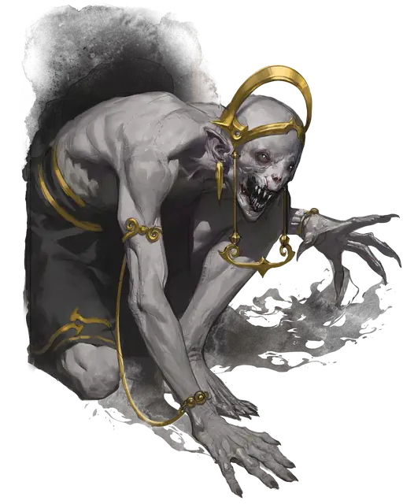

Порождение вампира
Vampire Spawn
Средняя или Маленькая Нежить, Нейтральная Злая

Класс Защиты 16 Инициатива +3 (13)
Хиты 90 (12к8 + 36)
Скорость 30 футов
| мод | спас | ||
|---|---|---|---|
| СИЛ | 16 | +3 | +3 |
| ЛОВ | 16 | +3 | +6 |
| ТЕЛ | 16 | +3 | +3 |
| мод | спас | ||
|---|---|---|---|
| ИНТ | 11 | +0 | +0 |
| МДР | 10 | +0 | +3 |
| ХАР | 12 | +1 | +1 |
Сопротивление урону Некротический
Чувства Тёмное зрение 60 футов, пассивное Восприятие 13
Языки Общий
Опасность 5 (1 800 опыта; БВ +3)
Особенности
Паучье лазание. Порождение вампира может лазать по сложным поверхностям, включая потолки, без совершения проверок характеристик.
Слабости вампира. Вампир обладает следующими слабостями:
Запрет. Вампир не может войти в жилище без приглашения одного из обитателей.
Текущая вода. Вампир получает 20 урона Кислотой, если заканчивает свой ход в текущей воде.
Кол в сердце. Если оружие, наносящее Колющий урон, вонзить в сердце Недееспособного вампира, то он погибнет.
Солнечный свет. Вампир получает 20 урона Излучением, если начинает свой ход на солнечном свету. Пока вампир на солнечном свету, он получает Помеху на броски атаки и проверки характеристик.
Действия
Мультиатака. Вампир совершает две атаки Когтями и использует Укус.
Когти. Бросок рукопашной атаки: +6, досягаемость 5 фт. Попадание: 8 (2к4 + 3) Рубящего урона. Если цель — существо Среднего размера или меньше, оно становится Схвачено (Сл освобождения от захвата 13) одной из двух лап.
Укус. Спасбросок Телосложения: Сл 14, одно согласное, Схваченное, Недееспособное или Опутанное существо в пределах 5 футов. Провал: 5 (1к4 + 3) Колющего урона плюс 10 (3к6) Некротического урона. Максимум Хитов цели снижается на число, равное полученному Некротическому урону, а вампир восстанавливает такое же количество Хитов.
Бонусные действия
Несмертное проворство. Вампир совершает действие Рывок или Отход.
Бонус мастерства +3
Среда обитания Город, Подземье
Сокровища Любые
Вампиры
Пьющие кровь владыки ночи
Вампиры скрывают свою проклятую бессмертную природу и выдают себя за живых, чтобы питаться их кровью. Самые младшие и кровожадные из них часто попадают в рабство к своим создателям, а невероятно хитрые и древние вампиры веками наслаждаются сверхъестественной властью над силами ночи.
Днём бессмертные создания скрываются в своих местах отдыха, недоступные для врагов и палящих солнечных лучей. Совершите бросок по таблице «Место отдыха вампира» для вдохновения или выберите сами мрачное место упокоения вампира.
Место отдыха вампира
| 1к6 | Место отдыха вампира находится… |
| 1 | Среди корней мёртвого дерева. |
| 2 | На дне затхлого пруда. |
| 3 | В гробу, наполненном могильной землёй. |
| 4 | В огромном сосуде с кровью или уксусом. |
| 5 | В недоступном для Гуманоидов пространстве. |
| 6 | Внутри скульптуры или комплекта доспехов. |
Порождения — недавно обращённые вампиры. Они ещё не до конца овладели своими силами, и многими из них движет ненасытная жажда крови. Эти создания могут служить более могущественным вампирам или преследовать собственные порочные цели.